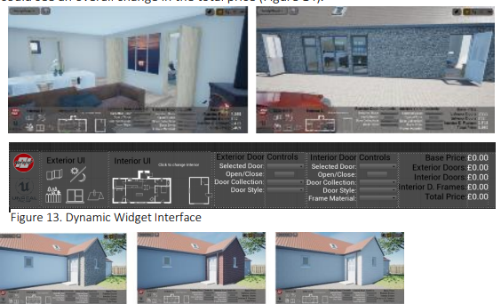
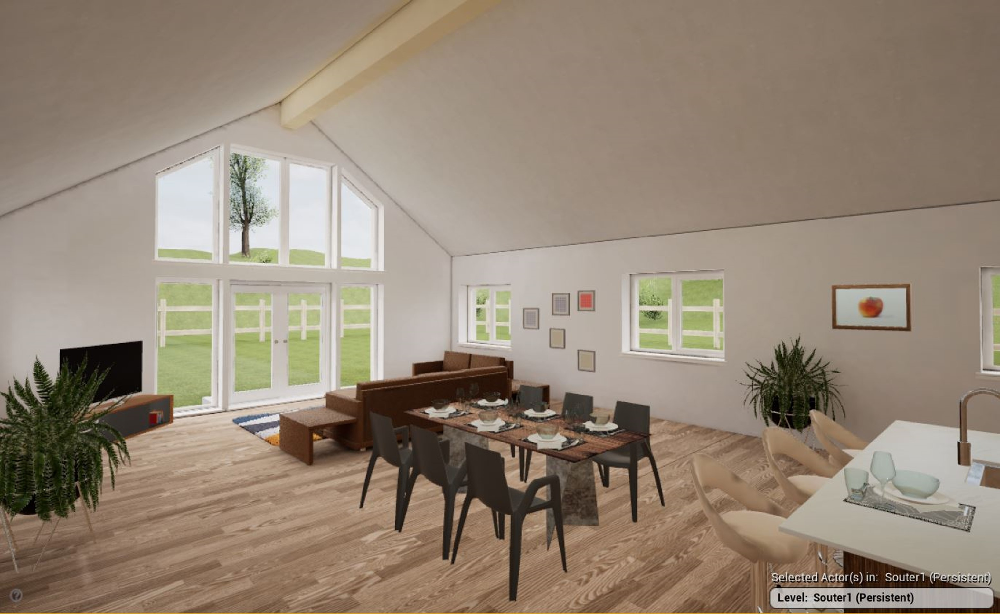
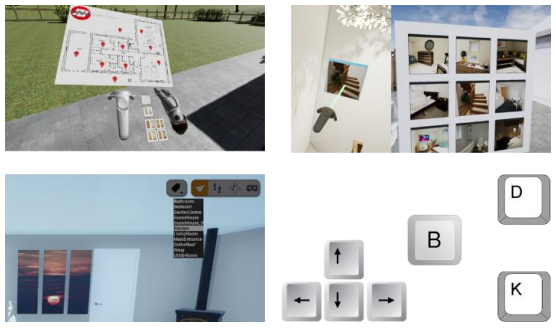
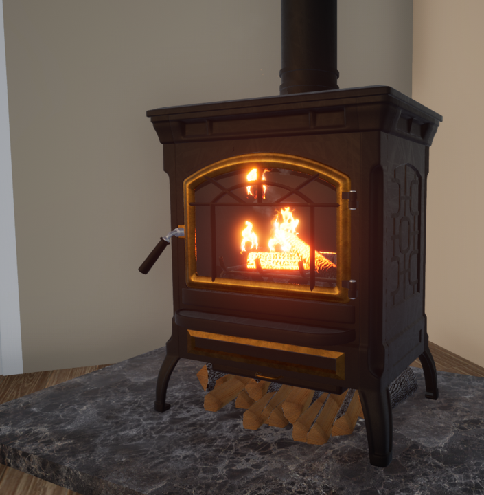

Norscot Joinery Ltd • Innovate UK KTP • Teesside University
BIM & Immersive VR Mass-Customization Configurator
Empowering prospective home buyers to customize sustainable timber-frame houses in real-time VR while automatically calculating material bills and manufacturing constraints, eliminating design iteration waste.
1. The Problem: Friction in Self-Build Housing Sales
The Timber Frame Self-Build Housing Sector (TFSBS) suffers from high customer drop-off during the initial specification phase. Prospective buyers struggle to interpret technical 2D architectural drawings and elevations, leading to frequent misunderstandings about room proportions, window sightlines, and interior lighting.
Each minor client customization request (such as expanding a kitchen or moving a partition wall) required manual redrafting by senior architects in Revit. This created weeks of turnaround delay, inflated design overhead, and risk of manufacturing discrepancies during factory timber-frame assembly.
2. Product Discovery & Customer Journey Transformation
As part of an Innovate UK Knowledge Transfer Partnership (KTP) embedded inside Norscot Joinery, I investigated the customer sales journey and designed a seamless digital touchpoint:
- Interactive VR Showroom: Replaced static showroom binders with immersive walkthroughs where clients could walk inside their prospective home at 1:1 human scale.
- Real-Time Configuration: Clients could swap window styles, alter wall layouts, and preview finish materials with instant visual feedback.
- Automated Cost Calculation: Linked dynamic user choices directly to live costing engines, preventing "budget shock" and speeding client sign-off.


3. Technical Architecture: Exposing BIM Metadata to Real-Time VR
The core technical challenge was breaking through the "black box" of proprietary BIM files to make architectural parametric data accessible inside a game engine:


Key Engineering Innovations:
- BIM to Game Engine Pipeline: Developed automated scripts parsing Autodesk Revit families into optimized Unreal Engine assets preserving manufacturing metadata.
- Manufacturing Rule Enforcement: Embedded structural timber-frame rules into the UI logic so buyers could not select structurally invalid spans.
- Automated Bill of Materials (BOM): The system auto-exports bill-of-quantities updates directly to factory ERP systems.
4. Live Interactive Prototype Walkthrough
Watch the interactive VR configurator prototype in action:
5. Measurable Business Outcomes & Industry Recognition
£70,000 Annual Savings
Saved Norscot £70k/yr in labor costs by establishing in-house automated VR/BIM capability over external visualizers.
Direct £53,000 Contract Won
VR prototypes enabled a client to immediately resolve layout uncertainties, securing a £53,000 project while saving the client £5,500.
Innovator of the Future Commendation
Awarded at the Scottish Knowledge Exchange Awards 2020; project received an Outstanding KTP Grade from Innovate UK.
Q1 Journal Publication
Published complete framework in Automation in Construction (Elsevier), validating academic and commercial rigor.